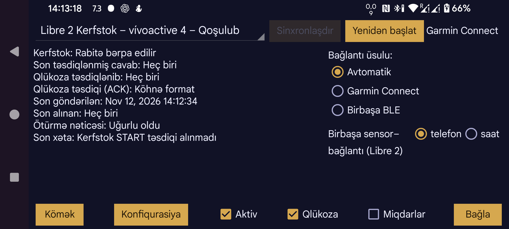

Kerfstok (həmçinin Kerfstok-un veb-saytına baxın) üçüncü tərəf tətbiqlərinə icazə verən Garmin idman saatları üçün tətbiqdir. 1.6.0 versiyasından etibarən sensor ekranı olmayan saatlarda da işləyir. Kerfstok aşağıdakı imkanları təmin edir:
Bu saat tətbiqi Bluetooth vasitəsilə Juggluco-ya qoşularaq Miqdarların mübadiləsini aparır və cari qlükoza göstəricisini davamlı göstərir.
Aktiv: bu saatı Juggluco-ya qoşur.
Miqdarlar: saatda Miqdarları daxil etməyə və Juggluco ilə mübadilə etməyə imkan verir. Kerfstok işlədən bir neçə saat eyni vaxtda cari qlükoza göstəricisini ala bilər, lakin Miqdarlara baxmaq və onları daxil etmək üçün yalnız bir saat istifadə oluna bilər.
Qlükoza: qlükoza göstəricilərinin saata göndərilib-göndərilməyəcəyini təyin edir.
Bağlantı üsulu: saatla hansı üsulla əlaqə qurulacağını seçir:
Birbaşa sensor — (*) telefon ( ) saat bağlantısı (Libre 3): bu seçim Garmin saatında Libre 3 Kerfstok işlədikdə görünür. «Saat» seçildikdə Libre 3 Kerfstok birbaşa Libre 3 sensoruna qoşulur. Beləliklə, saatda qlükoza göstəricilərini görmək üçün telefona ehtiyac qalmır.
Konfiqurasiya: qaranlıq rejimi, Qısa yolları, ID-ni və ya siqnalları (Libre 3 Kerfstok istifadə edildikdə) tənzimləyir.
Sinxronlaşdır: saata məlumat göndərir və saatdan məlumat alır.
Yenidən başlat: bağlantını yenidən ilkin vəziyyətə gətirir.
Saatla bağlantı işləmirsə, aşağıdakı üsullardan birini və ya bir neçəsini sınayın: